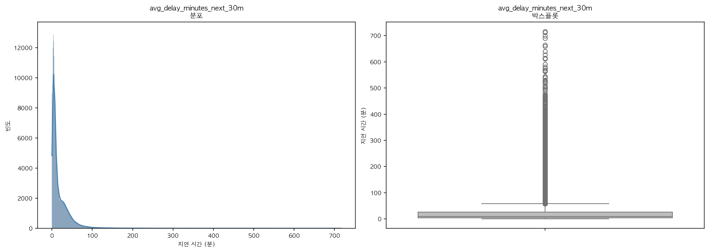
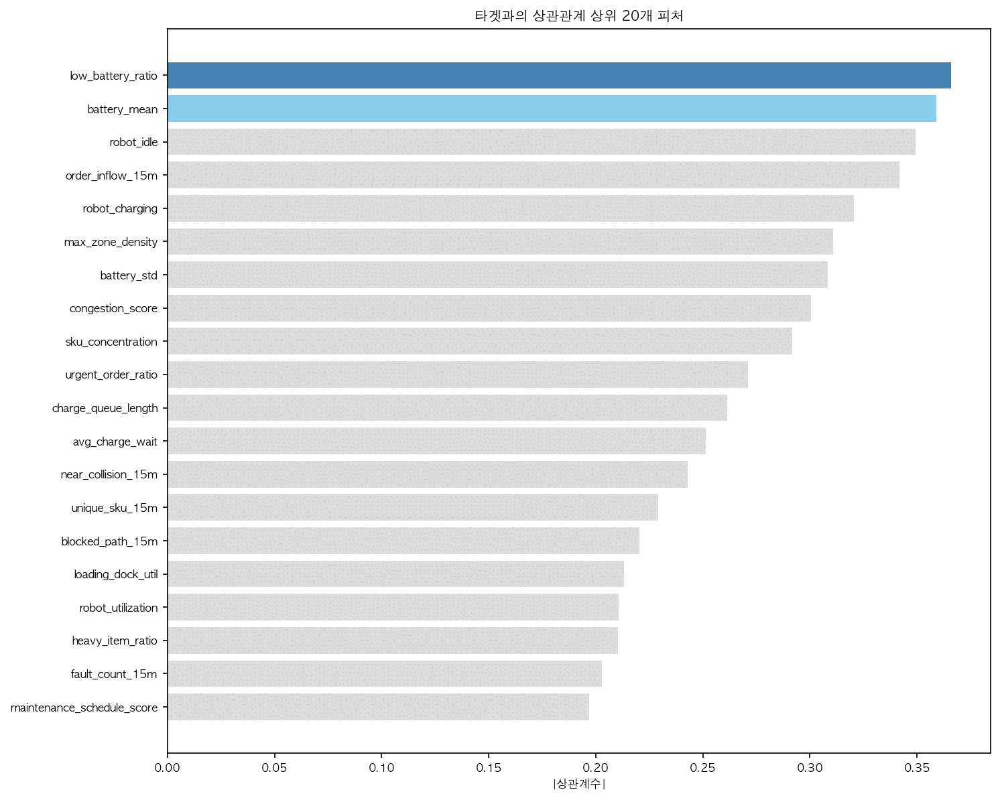
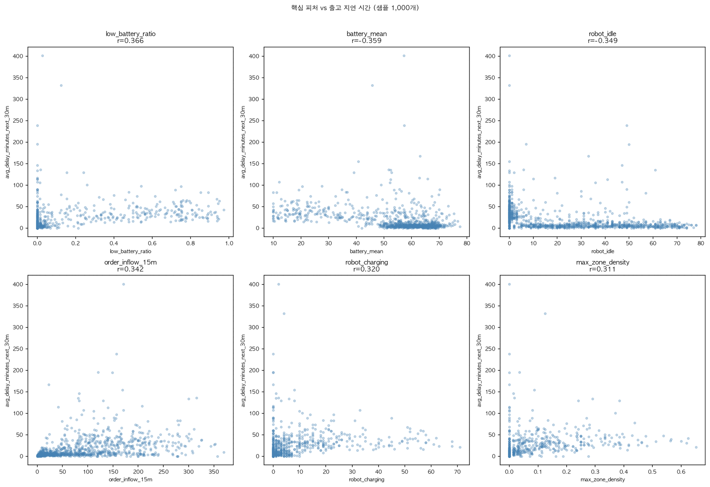

Logistics · Regression · Dacon 2026
운영 데이터 25만 행으로 향후 30분 평균 출고 지연(분)을 예측하는 DACON 경진대회. 테스트의 40%가 학습에 없는 창고 layout이라, 모델 튜닝보다 검증 설계와 결합이 점수를 갈랐다. 4인 팀에서 마감 전 EDA 재정리와 최종 결합 단계를 맡았다.



핵심 발견: 원시 피처 최고 상관은 0.366 수준 — r=0.9 같은 단일 신호는 없었다. 도메인 파생 charger_util(robot_charging ÷ charger_count)이 상관 0.32 → 0.607로 올라 가장 설명력 있는 신호가 됐고, 마감 전 EDA 재정리가 최종 결합 단계의 의미를 만들었다.